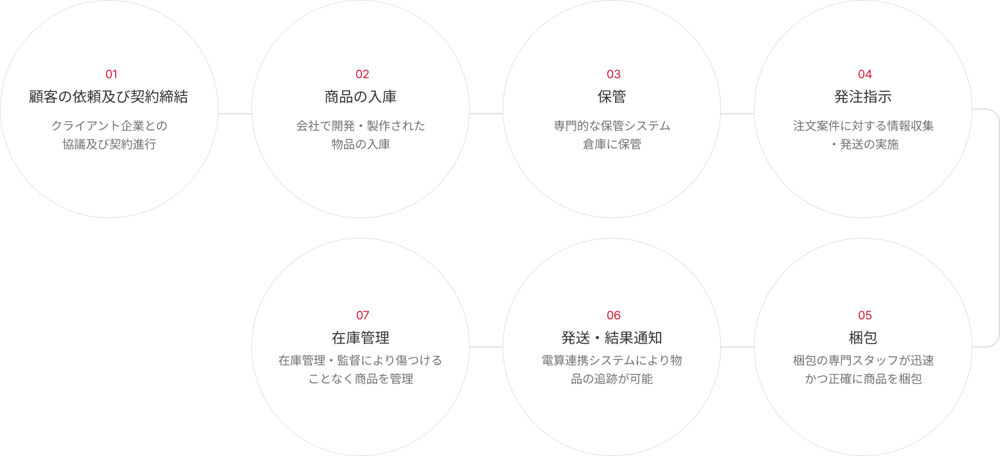
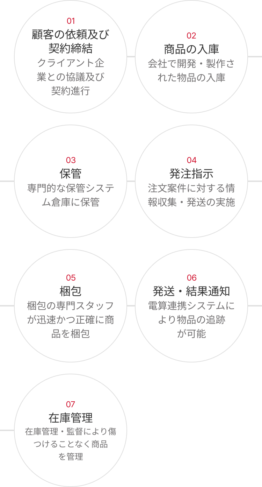
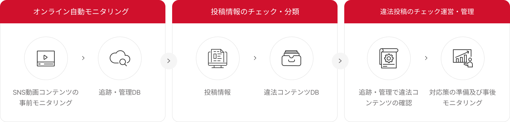
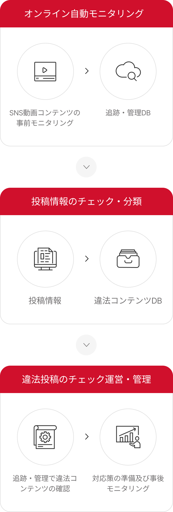
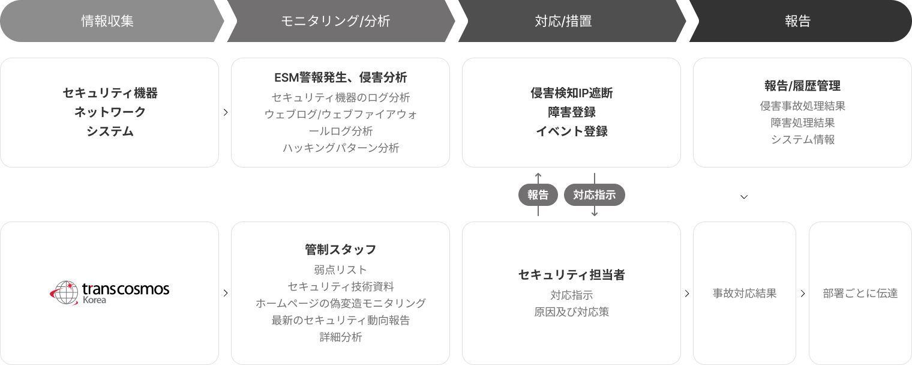
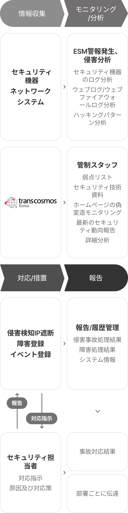
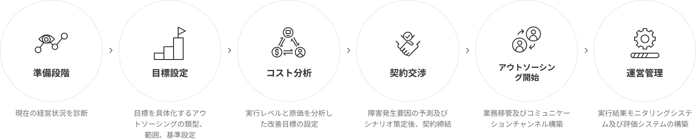
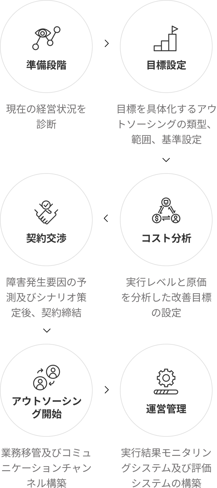
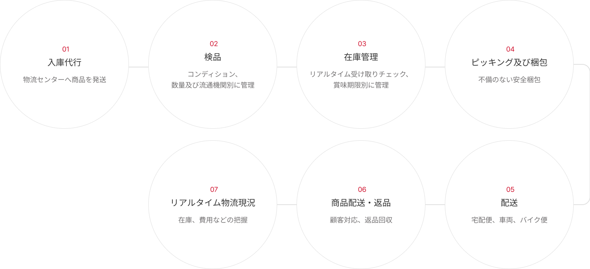
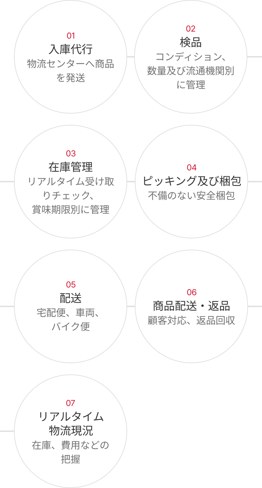

-
受発注業務代行 
トランスコスモスコリアは効果的な受発注及び在庫管理自動化サービスを通じて、物流の販売、注文処理、配車、在庫管理、コスト削減などのNeedsがあるクライアント企業に業務効率化及び専門化を提供します。
-
コンテンツモニタリング業務代行 
トランスコスモスコリアは、ライブコマース時代に拡大していく動画プラットフォーム及びEC市場の顧客を対象にNon-Core業務により業務集中度を高め、顧客に提供される様々なコンテンツ(SNS動画、商品告知情報、掲示板、商品レビューなど)に対するチェック及びわいせつ性、広告審議などの事前モニタリングを行い、適切なコンテンツが消費されているか事後モニタリングも提供します。また、AML(Anti-Money Laundering、資金洗浄防止制度)、FDS(Fraud Detection System、金融不正取引検出システム)などの不正取引及び書類検証サービスも提供しています。
-
管制モニタリング業務代行 
トランスコスモスコリアは、体系的な施設管理統合サービスを必要とする顧客を対象に、昼・夜のセキュリティ管理及び出入管理、施設物セキュリティに対する運営スタッフ需給システムの構築及び支援を通じて、業務に対するモニタリングを行うと同時に、現場に合わせた教育を専門的に提供しています。
- 情報収集
- モニタリング/分析
- 対応/措置
- 報告
- セキュリティ機器、ネットワーク、システム
- ESM警報発生、侵害分析(セキュリティ機器のログ分析、ウェブログ/ウェブファイアウォールログ分析、ハッキングパターン分析)
- 侵害検知IP遮断、障害登録、イベント登録、対応指示
- 報告/履歴管理(侵害事故処理結果、障害処理結果、システム情報)
- 事故対応結果
- 部署ごとに伝達
- transcosmos Korea
- 管制スタッフ(弱点リスト、セキュリティ技術資料、ホームページの偽変造モニタリング、最新のセキュリティ動向報告、詳細分析)
- セキュリティ担当者(対応指示、原因及び対応策)
- 事故対応結果
- 部署ごとに伝達
-
事務請負業務代行 
トランスコスモスコリアは、企業・組織が効率的な業務を処理するために、人事、総務、会計、文書作成及び翻訳などの事務業務分野に運営代行サービスを提供しています。
-
物流入出庫業務代行 
トランスコスモスコリアは、経営効果及び効率の最大化、現場人員に対する管理及び効率的な運営を必要とする顧客を対象に、物流の出庫及び返品などを専門業者に委託運営し、サービス品質を向上させる物流運営代行を提供します。
-
不動産物件検証業務の代行
トランスコスモスコリアは、不動産の虚偽広告による消費者被害防止のため、不動産物件情報の信憑性及び取引の可否を事前に確認し、安全な不動産取引市場の造成に貢献します。
-
一般事務職のヘッドハンティング
トランスコスモスコリアは、人事業務の効率性を高めるための採用業務に対するソーシングが必要なクライアント企業、人材採用専門業者を通じて採用コストの削減及び多様な人材DBをご希望のクライアント企業を対象に、求人情報の登録から人材斡旋、面接に至るまで全ての段階を代行することで、人事業務の効率化を提供します。
메인 이미지 입니다.
効率的な運営をサポートする
バックオフィス
企業運営に欠かせない様々なバックオフィス業務をサポートし、効率的な企業運営を助けます。
バックオフィス
トランスコスモスコリアは、クライアント企業の社内で行われる様々なビジネスプロセスの競争力を強化するため、クライアント企業が必要とする業務処理の全過程を効率的に進めるため専門的なアウトソーシングサービスを提供します。

主なサービス
トランスコスモスコリアは、革新をリードする多様なデジタルサービスを提供します
特長
トランスコスモスコリアは、幅広い業界経験と最高の技術力を有しています。
-
自動化システム導入
ビジネスプロセスに自動化システムを導入することで、業務処理にかかる時間を短縮し、業務の正確性及び一貫性を維持します。
-
効率的な業務管理
繰り返される、退屈な業務に対する満足度を向上させ、業務スキルを開発し集中できる環境を作ります。
-
顧客クレーム減少効果
業務プロセスにおいて無駄なプロセスを減らすことで、顧客満足度が高まり、顧客クレームが減少する効果があります。